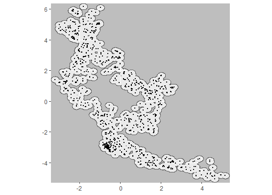
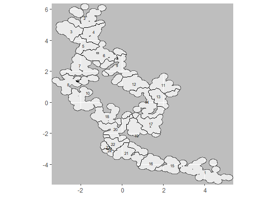
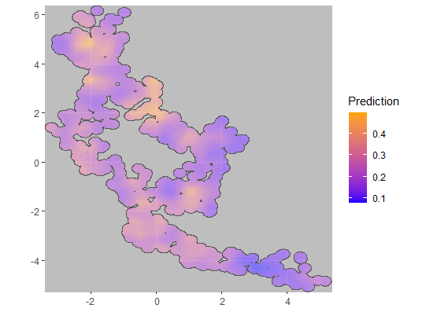
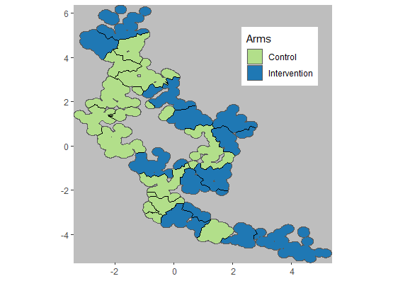

Use Case 01: Algorithmic specification of clusters
Usecase1.RmdThe way in which clusters are assigned in cluster randomized trials
(CRTs) can profoundly affect the efficiency of the trial. Allocating
clusters by algorithm makes it easy to generate alternative cluster
allocations for any given trial site, both for real-world trials and for
exploring this neglected aspect of trial design in simulations. The
CRTspat package contains R functions developed for this
purpose.
Input to the package is in the form of a data frame with one record
for each geo-location in a trial area. Most of the functions of the
package return a list of class CRTsp, which consists of the
input data frame augmented with additional vectors (e.g. coding
clusters, arms, or buffer zones), and lists containing descriptors of
the dataset. Objects of class CRTsp can also be used as
input to most of the functions.
After each step, summary() can be used to provide a
description of the output CRTsp object and
plotCRT() can be used to output a descriptive plot, or a
map of the locations, clusters, arms, buffer zones or other
geographically structured analysis results.
In general the package functions do not expect to find repeated values for outcomes for the same location. The
aggregateCRT()function is used to aggregate data with the same co-ordinates so that this condition is satisfied. In particular, if the input database contains outcome data (e.g. if it contains baseline survey results), these should be provided in the form of a numeratorbase_numand denominatorbase_denomfor each record. These values will be summed byaggregateCRT()over all records with the same co-ordinates. An object of classCRTspis output.-
The
specify_clusters()function carries out algorithmic assignment of clusters and outputs aCRTspobject augmented with the cluster assignments. One of three different algorithms must be selected:-
algorithm = "NN"implements a nearest neighbour algorithm. Iteratively One household is selected and a cluster of size k is constructed by adding its k-1 nearest neighbors (NN). These points are removing these points from the data set, and this step is repeated iteratively until all the points have been allocated. This algorithm will often lead to connected clusters, in a “fish scale” manner. This is the default option. -
algorithm = "TSP"implements therepetitive_nnoption of theTSPpackage for solving the travelling salesman problem. This finds an efficient path through the study locations. Clusters are formed by grouping the required number of locations sequentially along the path. Note that this is not guaranteed to give rise to congruent clusters. -
algorithm = "kmeans"implements a k-means algorithm that aims to partition the locations into the required number of clusters in which each observation belongs to the cluster with the nearest cluster centroid. k-means clustering minimizes within-cluster variances (squared Euclidean distances) but does not necessarily give equal-sized clusters. Irrespective of the algorithm, the target number of points allocated to each cluster is specified by the parameterh.
-
The
randomizeCRT()function carries out a simple randomization of clusters to arms, and outputs aCRTspobject augmented with the assignments. (If baseline data are available matched pair randomization is available as an option)
The units to be randomized will usually be households, but the algorithms can be used to generate clusters with equal geographical areas by randomizing pixels. In this case a dataset containing x,y coordinates for each pixel should be used as input.
The example uses locations and baseline test positivity data from a site in Kenya. The input dataset contains a single record for each test so there are multiple records of test positivity for many locations.
library(CRTspat)
example_locations <- readdata('example_site.csv')
# assign the denominator to the baseline data
example_locations$base_denom <- 1
# convert to a `CRTsp` object
exampleCRT <- CRTsp(example_locations)
summary(exampleCRT)## ===============================CLUSTER RANDOMISED TRIAL ===========================
##
## Summary of coordinates
## ----------------------
## Min. : 1st Qu.: Median : Mean : 3rd Qu.: Max. :
## x -3.20 -1.31 -0.23 0.00 1.35 5.16
## y -5.07 -2.84 -0.16 0.00 2.49 6.16
##
## Total area (within 0.2 km of a location) : 27.6 sq.km
## Total area (convex hull) : 48.2 sq.km
##
## Locations and Clusters
## ---------------------- -
## Coordinate system (x, y)
## Not aggregated. Total records: 3172. Unique locations: 1181
## Available clusters (across both arms) Not assigned
## No randomization -
## No power calculations to report -
##
## Other variables in dataset
## -------------------------- RDT_test_result base_denom
# Aggregate data for multiple observations for the same location Only the (x,y) co-ordinates and numerical
# auxiliary variables
example <- aggregateCRT(exampleCRT, auxiliaries = c("RDT_test_result", "base_denom"))
summary(example)## ===============================CLUSTER RANDOMISED TRIAL ===========================
##
## Summary of coordinates
## ----------------------
## Min. : 1st Qu.: Median : Mean : 3rd Qu.: Max. :
## x -3.20 -1.39 -0.30 -0.07 1.25 5.16
## y -5.07 -2.84 0.19 0.05 2.49 6.16
##
## Total area (within 0.2 km of a location) : 27.6 sq.km
## Total area (convex hull) : 48.2 sq.km
##
## Locations and Clusters
## ---------------------- -
## Coordinate system (x, y)
## Locations: 1181
## Available clusters (across both arms) Not assigned
## No randomization -
## No power calculations to report -
##
## Other variables in dataset
## -------------------------- RDT_test_result base_denom
# Plot map of locations
plotCRT(example, map = TRUE, showLocations = TRUE, maskbuffer = 0.2)

Fig 1.1 Map of
locations
In the example shown here a target cluster size of 50 locations is set, but the heterogeneity in spatial density of the locations leads to considerable variation in the number of locations assigned to each cluster.
example_clustered <- specify_clusters(trial = example, h = 50, algorithm = 'NN')
summary(example_clustered)## ===============================CLUSTER RANDOMISED TRIAL ===========================
##
## Summary of coordinates
## ----------------------
## Min. : 1st Qu.: Median : Mean : 3rd Qu.: Max. :
## x -3.20 -1.39 -0.30 -0.07 1.25 5.16
## y -5.07 -2.84 0.19 0.05 2.49 6.16
##
## Total area (within 0.2 km of a location) : 27.6 sq.km
## Total area (convex hull) : 48.2 sq.km
##
## Locations and Clusters
## ---------------------- -
## Coordinate system (x, y)
## Locations: 1181
## Available clusters (across both arms) 24
## Per cluster mean number of points 49.2
## Per cluster s.d. number of points 3.9
## No randomization -
## No power calculations to report -
##
## Other variables in dataset
## -------------------------- RDT_test_result base_denom
plotCRT(example_clustered, map = TRUE, showClusterLabels = TRUE, maskbuffer = 0.2, labelsize = 2)

Fig 1.2 Map of
clusters
A smoothed map of the baseline prevalence surface is produced using a
geostatistical model in R-INLA.
Details of the implementation in CRTspat are in the documentation of
CRTanalysis and of Use Case
5.
library(Matrix)
examplemesh100 <- readdata("examplemesh100.rds")
baselineanalysis <- CRTanalysis(trial=example_clustered,
method = 'INLA', link='logit', baselineOnly = TRUE,
baselineNumerator = "RDT_test_result",
baselineDenominator = "base_denom",
clusterEffects = FALSE, spatialEffects = TRUE,
requireMesh = TRUE, inla_mesh = examplemesh100)## Analysis of baseline only, using INLA
plotCRT(baselineanalysis, map = TRUE, fill = 'prediction')

Fig 1.3 Smoothed surface
of baseline prevalence
A summary of the baseline prevalence at cluster level is used in this example to match clusters on baseline prevalence and then generate a randomisation based on matched pairs.
example_randomized <- randomizeCRT(example_clustered, matchedPair = TRUE,
baselineNumerator = "RDT_test_result", baselineDenominator = "base_denom")
summary(example_randomized)## ===============================CLUSTER RANDOMISED TRIAL ===========================
##
## Summary of coordinates
## ----------------------
## Min. : 1st Qu.: Median : Mean : 3rd Qu.: Max. :
## x -3.20 -1.39 -0.30 -0.07 1.25 5.16
## y -5.07 -2.84 0.19 0.05 2.49 6.16
## nearestDiscord -2.57 -0.42 0.01 0.01 0.46 1.78
##
## Total area (within 0.2 km of a location) : 27.6 sq.km
## Total area (convex hull) : 48.2 sq.km
##
## Locations and Clusters
## ---------------------- -
## Coordinate system (x, y)
## Locations: 1181
## Available clusters (across both arms) 24
## Per cluster mean number of points 49.2
## Per cluster s.d. number of points 3.9
## Cluster randomization: Matched pairs randomized
## No power calculations to report -
##
## Other variables in dataset
## -------------------------- RDT_test_result base_denom base_num pair

Fig 1.4 Map of arm
assignments